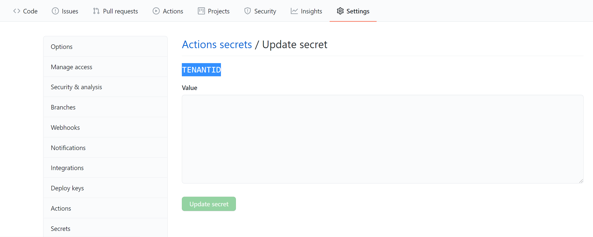

Module 2: Configure IAC Workflow - Terraform
Using Terraform action
The hashicorp/setup-terraform action is a JavaScript action that sets up Terraform CLI in your GitHub Actions workflow by:
- Downloading a specific version of Terraform CLI and adding it to the
PATH. - Configuring the Terraform CLI configuration file with a Terraform Cloud/Enterprise hostname and API token.
- Installing a wrapper script to wrap subsequent calls of the
terraformbinary and expose its STDOUT, STDERR, and exit code as outputs namedstdout,stderr, andexitcoderespectively. (This can be optionally skipped if subsequent steps in the same job do not need to access the results of Terraform commands.)
After you've used the action, subsequent steps in the same job can run arbitrary Terraform commands using the GitHub Actions run syntax. This allows most Terraform commands to work exactly like they do on your local command line.
Usage
This action can be run on ubuntu-latest, windows-latest, and macos-latest GitHub Actions runners. When running on windows-latest the shell should be set to Bash.
The default configuration installs the latest version of Terraform CLI and installs the wrapper script to wrap subsequent calls to the terraform binary.
steps:
- uses: hashicorp/setup-terraform@v1
A specific version of Terraform CLI can be installed.
steps:
- uses: hashicorp/setup-terraform@v1
with:
terraform_version: 0.12.25
Exercise 1: Configure authentication between GitHub Actions and your Azure subscription
Azure Provider: Authenticating using a Service Principal with a Client Secret
Terraform supports a number of different methods for authenticating to Azure:
- Authenticating to Azure using the Azure CLI
- Authenticating to Azure using Managed Service Identity
- Authenticating to Azure using a Service Principal and a Client Certificate
- Authenticating to Azure using a Service Principal and a Client Secret (which is covered in this guide)
We recommend using either a Service Principal or Managed Service Identity when running Terraform non-interactively (such as when running Terraform in a CI server) - and authenticating using the Azure CLI when running Terraform locally.
Creating a Service Principal
A Service Principal is an application within Azure Active Directory whose authentication tokens can be used as the client_id, client_secret, and tenant_id fields needed by Terraform (subscription_id can be independently recovered from your Azure account details).
It's possible to complete this task in either the Azure CLI or in the Azure Portal - in both we'll create a Service Principal which has Contributor rights to the subscription. It's also possible to assign other rights depending on your configuration.
Creating a Service Principal using the Azure CLI
Note
If you're using the China, German or Government Azure Clouds - you'll need to first configure the Azure CLI to work with that Cloud. You can do this by running:
$ az cloud set --name AzureChinaCloud|AzureGermanCloud|AzureUSGovernment
Firstly, login to the Azure CLI using:
$ az login
Once logged in - it's possible to list the Subscriptions associated with the account via:
$ az account list
The output (similar to below) will display one or more Subscriptions - with the id field being the subscription_id field referenced above.
[
{
"cloudName": "AzureCloud",
"id": "00000000-0000-0000-0000-000000000000",
"isDefault": true,
"name": "PAYG Subscription",
"state": "Enabled",
"tenantId": "00000000-0000-0000-0000-000000000000",
"user": {
"name": "user@example.com",
"type": "user"
}
}
]
Should you have more than one Subscription, you can specify the Subscription to use via the following command:
$ az account set --subscription="SUBSCRIPTION_ID"
We can now create the Service Principal which will have permissions to manage resources in the specified Subscription using the following command:
$ az ad sp create-for-rbac --role="Contributor" --scopes="/subscriptions/SUBSCRIPTION_ID"
Note
You need to be owner of such subscription in order to successfully execute the command.
This command will output 5 values:
{
"appId": "00000000-0000-0000-0000-000000000000",
"displayName": "azure-cli-2017-06-05-10-41-15",
"name": "http://azure-cli-2017-06-05-10-41-15",
"password": "0000-0000-0000-0000-000000000000",
"tenant": "00000000-0000-0000-0000-000000000000"
}
These values map to the Terraform variables like so:
appIdis theclient_iddefined above.passwordis theclient_secretdefined above.tenantis thetenant_iddefined above.
Copy the JSON output and store it as a GitHub secret within your GitHub repository. To do this, from your GitHub repository, select the Settings tab and then select Secrets from the left menu.
Enter the following values and then select Add secret:
- Name: Enter CLIENTID.
- Value: Paste the Value of Appid that you copied earlier.
- Name: Enter CLIENTSECRET.
- Value: Paste the Value of password that you copied earlier.
- Name: Enter TENANTID.
- Value: Paste the Value of tenantid that you copied earlier.

This is the information that you'll need to specify the authentication in the workflow.
Exercise 2: Update and Verify Terraform template file in the repo
Go to the IAC repository in Github and open the GitHub Codespaces if you have one already created. If not, go ahead and select
+ New codespace.Create a new branch following the
users/{user_alias}/{purpose_of_the_branch}schema.Navigate to
mgr-sh360-infrastructure-template/Terraform-templates/Resource-groupfolder. This folder contains the terraform template that the workflow will utilize to deploy infrastructure to Azure.The file
main.tfis the template file responsible for deploying resource group. Go toterraform.tfvars, and the update the name of resource group to {cus_prefix}-Dojo-terraform-prd-{team_suffix}.
Exercise 3: Work with WorkFlow File to trigger the action
The workflow files are stored in the .github/workflows folder at the root of your repository. The workflow file extension can be either .yml or .yaml.
The core Terraform workflow has three steps:
Write - Author infrastructure as code. Plan - Preview changes before applying. Apply - Provision reproducible infrastructure.
We will create two workflow file for Plan and Apply
Navigate to
mgr-sh360-infrastructure-template/.github/workflows/terraform-plan.ymlfile and take a note of how every action is constructed to deploy the templates.A workflow file, starts with defining its name, which in our case is Terraform Plan to Azure. Next is the Triggers section called on, this section is responsible for listing down all the different ways this workflow is triggered. We have defined 3 ways here:
Push: This trigger ensures that whenever a new update is pushed in particular branches this build workflow must run. We have specified just the main branch, thus only when the main branch has some updates pushed the build pipeline is expected to run.
Pull Request: This trigger ensures that whenever a PR is raised against a particular branch, the build pipeline is run as a verification run. We have specified just the main branch, thus only when a PR is raised against the main branch, the build pipeline is expected to run.
Workflow Dispatch: This option is used for manually triggering the workflow.
Uncomment the push and pull request section in the triggers, to let the workflow trigger automatically on a push or PR to the main branch.
Edit the value of
ARM_SUBSCRIPTION_IDunder the environment variables to the subscription id as per your environment configuration.The last task of this workflow
Terraform Planis used to preview changes that will take effect when ran. This task is currently disabled, to enable this removed the if: {{ false }} from the action.Perform the above steps 5-8 for the
mgr-sh360-infrastructure-template/.github/workflows/terraform-apply.ymlworkflow as well.After having done all the changes. Commit them and create a Pull Request. As part of the pull request check, the terraform Plan and Apply workflows will be triggered. Once the pull requests is approved and checks have been passed, you can merge the changes into the main-base branch.
As part of this merge, the Terraform IAC workflow will be triggered again. If successfully executed, Monitor the progress of the workflow by checking the Components are created.

Key takeaways
- Learning GitHub Workflow and Actions.
- Deploy terraform templates using Github Actions
- Understanding the Azure Resources and Automation using terraform